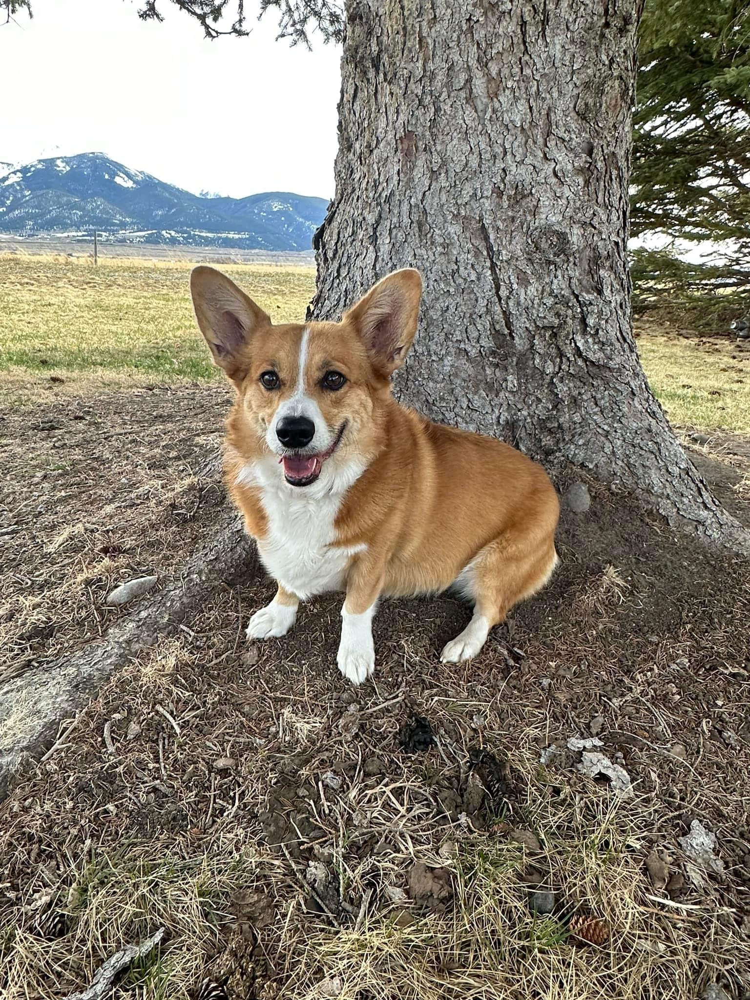

Intro
Hi, I'm Cody!
I'm studying Computer Science at MSU!
Bozeman, MT
Current Weather
|
Weather data by OpenMeteo
 Skills
Skills
|
 About Me
About Me
Get to Know Me
I love learning and constantly seek ways to improve. My passion lies in solving complex problems and building meaningful solutions.
I also have a Corgi named Rose—she's absolutely the best. Here's a picture of her:
